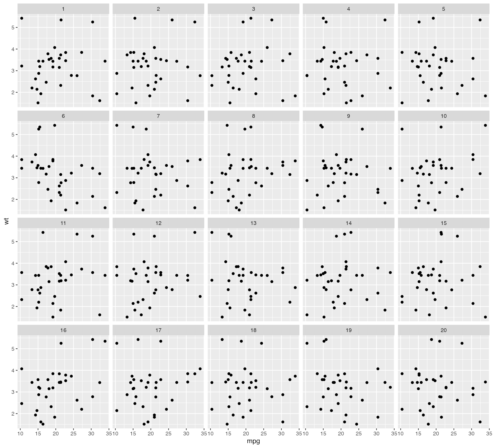

An introduction to the nullabor package
The nullabor package provides functions to support quantifying the significance of structure seen in plots of data.
The functions provide methods for two protocols: lineup and rorschach. The lineup protocol places the plot of the actual data among a field of plots of null data, and in the Rorschach, all plots are of null data. The encrypt function enables the location of the actual data plot to be a secret, that needs decrypt to reveal. There are several different functions for generating null data sets: null_permute, null_lm and null_dist.
The lineup protocol
In this protocol, the plot of the real data is randomly embedded
amongst a set of null plots. The matrix of plots is known as a lineup.
The null plots are generated by a method consistent with the null
hypothesis. The lineup is shown to an observer. If the observer can pick
the real data as different from the others, this puts weight on the
statistical significance of the structure in the plot. The
"lineup" function returns a set of generated null datasets
and the real data embedded randomly among these null datasets. The
method of null generation should be provided in the lineup function for
the null datasets to be generated automatically along with the real
dataset. The users also have the option of generating the null datasets
themselves and providing them in the "lineup" function. The
position of the real dataset can be left missing and the function picks
the position at random. The function then returns the position as an
encrypted code. The encrypted code is copied and pasted on the console
to obtain the true position of the plot.
d <- lineup(null_permute("mpg"), mtcars)## decrypt("DruT c2V2 AR LeOAVAeR 4d")
head(d)## mpg cyl disp hp drat wt qsec vs am gear carb .sample
## ...1 17.3 6 160 110 3.90 2.620 16.46 0 1 4 4 1
## ...2 15.2 6 160 110 3.90 2.875 17.02 0 1 4 4 1
## ...3 16.4 4 108 93 3.85 2.320 18.61 1 1 4 1 1
## ...4 18.7 6 258 110 3.08 3.215 19.44 1 0 3 1 1
## ...5 18.1 8 360 175 3.15 3.440 17.02 0 0 3 2 1
## ...6 10.4 6 225 105 2.76 3.460 20.22 1 0 3 1 1
# Position of actual data plot
attr(d, "pos")## [1] 14The lineup data can be then used to generate the lineup using ggplot2. The lineup is shown to one or more observers who are asked to identify the plot which is different. If the observer can identify the plot of the real data correctly, we reject the null hypothesis and conclude that the plot of the real data has stronger structure than the null plots.
ggplot(data=d, aes(x=mpg, y=wt)) + geom_point() + facet_wrap(~ .sample)
The Rorschach protocol
The Rorschach protocol is used to calibrate the eyes for variation
due to sampling. The plots generated corresponds to the null datasets,
data that is consistent with a null hypothesis. The
"rorschach" function returns a set of null plots which are
shown to observers to calibrate their eyes with variation. Like the
"lineup" function, the null generating mechanism should be
provided as an input along with a real dataset. A probability can also
be given as input which dictates the chance of including the true data
with null data.
d <- rorschach(null_permute("mpg"), mtcars, n = 20, p = 0)
ggplot(data=d, aes(x=mpg, y=wt)) + geom_point() + facet_wrap(~ .sample)
Generate null data with a specific distribution
The "null_dist" function takes as input a variable name
of the data and a particular distribution. This variable in the data is
substituted by random generations of the particular distribution. The
different distributions include beta, cauchy, chi-squared, exponential,
f, gamma, geometric, log-normal, lognormal, logistic, negative binomial,
normal, poisson, t and weibull. A list of parameters of distribution can
also be provided as input. In case it is not provided,
"fitdistr" is used to estimate the parameters from the
given data. The function "null_dist" returns a function
that given the data generates a null data set.
## mpg cyl disp hp drat wt qsec vs am gear carb
## Mazda RX4 23.363215 6 160 110 3.90 2.620 16.46 0 1 4 4
## Mazda RX4 Wag 7.402564 6 160 110 3.90 2.875 17.02 0 1 4 4
## Datsun 710 15.388579 4 108 93 3.85 2.320 18.61 1 1 4 1
## Hornet 4 Drive 15.963965 6 258 110 3.08 3.215 19.44 1 0 3 1
## Hornet Sportabout 26.584730 8 360 175 3.15 3.440 17.02 0 0 3 2
## Valiant 19.495271 6 225 105 2.76 3.460 20.22 1 0 3 1Generate null data by permuting a variable
The "null_permute" function takes as input a variable
name of the data. This variable is permuted to obtain the null dataset.
The function "null_dist" returns a function that given the
data generates a null data set.
head(null_permute("mpg")(mtcars))## mpg cyl disp hp drat wt qsec vs am gear carb
## Mazda RX4 21.4 6 160 110 3.90 2.620 16.46 0 1 4 4
## Mazda RX4 Wag 17.8 6 160 110 3.90 2.875 17.02 0 1 4 4
## Datsun 710 30.4 4 108 93 3.85 2.320 18.61 1 1 4 1
## Hornet 4 Drive 26.0 6 258 110 3.08 3.215 19.44 1 0 3 1
## Hornet Sportabout 21.0 8 360 175 3.15 3.440 17.02 0 0 3 2
## Valiant 13.3 6 225 105 2.76 3.460 20.22 1 0 3 1Generate null data with null residuals from a model
The function "null_lm" takes as input a model
specification formula as defined by "lm" and method for
generating null residuals from the model. The three built in methods are
‘rotate’, ‘pboot’ and ‘boot’ defined by "resid_rotate",
"resid_pboot" and "resid_boot" respectively.
The function returns a function which given the data generates a null
dataset.
## mpg cyl disp hp drat wt qsec vs am gear carb
## Mazda RX4 21.0 6 160 110 3.90 2.091104 16.46 0 1 4 4
## Mazda RX4 Wag 21.0 6 160 110 3.90 3.150694 17.02 0 1 4 4
## Datsun 710 22.8 4 108 93 3.85 2.408048 18.61 1 1 4 1
## Hornet 4 Drive 21.4 6 258 110 3.08 2.546780 19.44 1 0 3 1
## Hornet Sportabout 18.7 8 360 175 3.15 3.568762 17.02 0 0 3 2
## Valiant 18.1 6 225 105 2.76 4.381137 20.22 1 0 3 1
## .resid .fitted
## Mazda RX4 -0.99804946 3.089154
## Mazda RX4 Wag 0.06154012 3.089154
## Datsun 710 -0.42755446 2.835602
## Hornet 4 Drive -0.48602857 3.032809
## Hornet Sportabout 0.15562583 3.413136
## Valiant 0.88348341 3.497653Generate null data outside of nullabor
If the null generating mechanism is specialised it is worth creating
the process outside of the nullabor package. The lineup
function can be simply used to randomize the position of the data plot
to produce a lineup, encrypting the position. An example of this is in
Roy Chowdhury, N. et al (2015), where the data is high-dimensional, and
the response variable is categorical. We would use a dimension reduction
method like linear discrimants to find a low-dimensional projection that
separates the groups. To generate null data, the group labels are
permuted and the dimension reduction is performed again.
##
## Attaching package: 'MASS'## The following object is masked from 'package:dplyr':
##
## select
data(wasps)
wasp.lda <- lda(Group~., data=wasps[,-1])
wasp.ld <- predict(wasp.lda, dimen=2)$x
true <- data.frame(wasp.ld, Group=wasps$Group)
wasp.sim <- data.frame(LD1=NULL, LD2=NULL, Group=NULL, .n=NULL)
for (i in 1:19) {
x <- wasps
x$Group <- sample(x$Group)
x.lda <- lda(Group~., data=x[,-1])
x.ld <- predict(x.lda, dimen=2)$x
sim <- data.frame(x.ld, Group=x$Group, .n=i)
wasp.sim <- rbind(wasp.sim, sim)
}
pos <- sample(1:20, 1)
d <- lineup(true=true, samples=wasp.sim, pos=pos)
ggplot(d, aes(x=LD1, y=LD2, colour=Group)) +
facet_wrap(~.sample, ncol=5) +
geom_point() + theme(aspect.ratio=1)
attr(d, "pos")## [1] 6Computing p-values
The function pvisual can be used to compute a visual
p-value after the lineup has been shown to a group of independent
observers. You need to provide (1) number of plots in the lineup, m
(default=20), (2) number of observers who read the plot, K, and (3) the
number of observers who picked the data plot. For the above example,
suppose that 10 observers evaluated the lineup, and of these 4 selected
the data plot, then the visual p-value, calculated using the binomial,
and via simulation to account for dependencies is:
pvisual(4, 10)## x simulated binom
## [1,] 4 0.0027 0.001028498Computing power
The function visual_power can be used to compute the
power of each lineup. This is an example using the sample turk results
provided.
data(turk_results)
visual_power(turk_results)## # A tibble: 6 × 3
## pic_id power n
## <int> <dbl> <int>
## 1 36 0 18
## 2 105 0.746 17
## 3 116 0.125 16
## 4 131 0.842 14
## 5 159 0.656 15
## 6 225 0.130 15References
Buja, A., Cook, D., Hofmann, H., Lawrence, M., Lee, E.-K., Swayne, D. F, Wickham, H. (2009) Statistical Inference for Exploratory Data Analysis and Model Diagnostics, Royal Society Philosophical Transactions A, 367:4361–4383, DOI: 10.1098/rsta.2009.0120.
Wickham, H., Cook, D., Hofmann, H. and Buja, A. (2010) Graphical Inference for Infovis, IEEE Transactions on Visualization and Computer Graphics, 16(6):973–979, Best paper award, DOI: 10.1109/TVCG.2010.161.
Hofmann, H., Follett, L., Majumder, M. and Cook, D. (2012) Graphical Tests for Power Comparison of Competing Designs, IEEE Transactions on Visualization and Computer Graphics, 18(12):2441–2448, DOI: 10.1109/TVCG.2012.230.
Majumder, M., Hofmann, H. and Cook, D. (2013) Validation of Visual Statistical Inference, Applied to Linear Models, Journal of the American Statistical Association, 108(503):942–956, Featured Article, DOI: 10.1080/01621459.2013.808157.
Roy Chowdhury, N., Cook, D., Hofmann, H., Majumder, M., Lee, E. K., & Toth, A. L. (2014). Using visual statistical inference to better understand random class separations in high dimension, low sample size data. Computational Statistics, 30(2), 293-316, DOI: 10.1007/s00180-014-0534-x.
Majumder, M. and Hofmann, H. and Cook, D. (2014) Human Factors Influencing Visual Statistical Inference, DOI: 10.48550/arXiv.1408.1974.